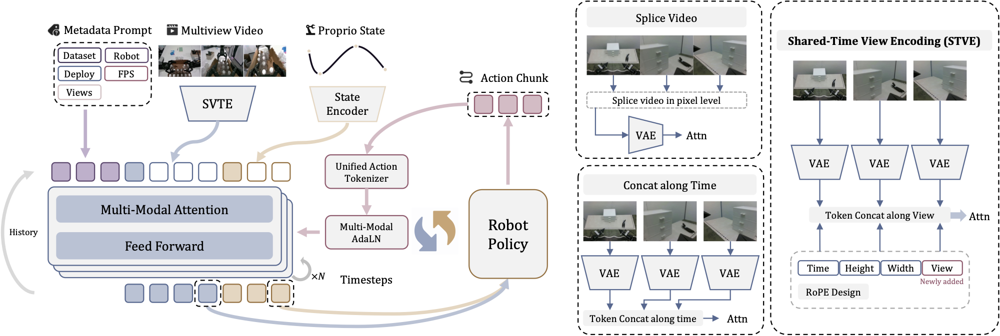
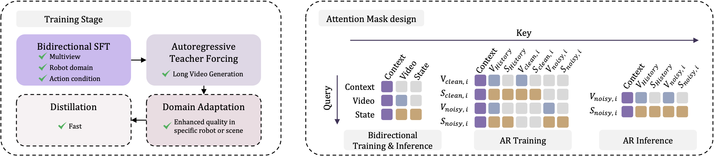
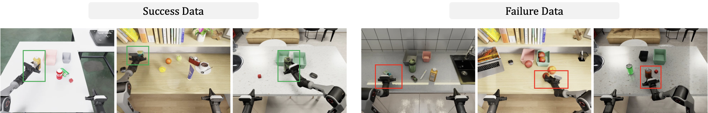
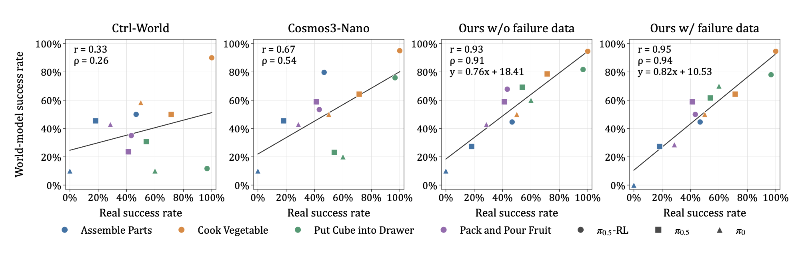
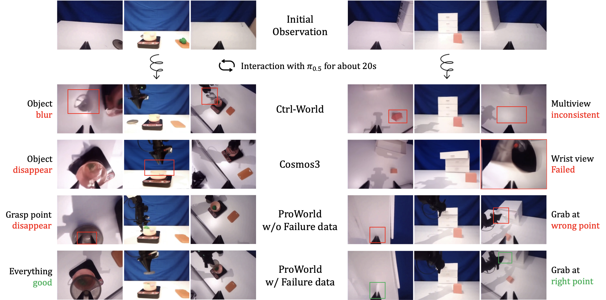
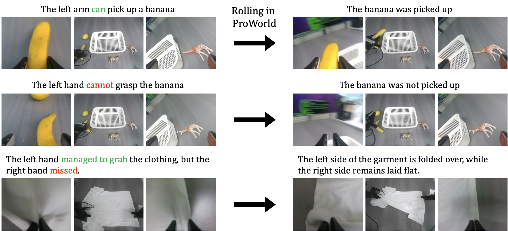

Complete feedback
The policy receives synchronized multi-view images and predicted proprioceptive state after every action, not just a single rendered frame.
ProWorld
An action-conditioned world model that returns the observations a frozen robot policy needs next—and keeps failed interactions from becoming hallucinated successes.

Overview
Physical robot trials are expensive. ProWorld asks whether a learned world model can stand in as a closed-loop test environment whose success rates track the real robot.
The policy receives synchronized multi-view images and predicted proprioceptive state after every action, not just a single rendered frame.
STVE keeps camera identity and shared time coordinates without pixel tiling seams or view-dependent temporal offsets.
Simulated missed grasps and incomplete contacts reduce interaction hallucinations that inflate generated success rates.
Evaluating robot manipulation policies through repeated physical trials is costly. We study whether an action-conditioned world model can serve as a closed-loop test environment whose policy success rates track those on real robots. Beyond realistic video, the model must return the camera views and proprioceptive state needed for the policy's next action and preserve failed-action outcomes to avoid overestimating policy capability. We introduce ProWorld, a world model that jointly predicts multi-view video and robot state, then feeds both back to a frozen policy for repeated interaction. ProWorld comprises a shared transformer for joint video–state flow prediction and Shared-Time View Encoding to distinguish cameras while preserving temporal synchronization. To reduce interaction hallucinations that turn missed grasps into successful lifts, we augment training with failed interactions collected in high-fidelity simulation, reducing inflated success rates in the generated environment. ProWorld achieves the highest overall TriWorldBench score among the compared methods. Across three policies and four local manipulation tasks, it attains a Pearson correlation of 0.95 and a Spearman correlation of 0.94 between generated and real success rates.
Method
ProWorld is the environment in a repeated observe–act loop. Only the initial observation comes from the real world; afterward, the frozen policy acts on generated images and predicted state.



Results
Across three policies and four local tasks, ProWorld reaches Pearson r = 0.95 and Spearman ρ = 0.94 with physical success rates, and leads TriWorldBench among the compared methods.



Videos
Switch among the three collections below. Closed-loop clips show frozen policies interacting with ProWorld; GenieSim clips are training-data examples, not model generations.
Hesitates and continues holding the plate without releasing it.
Fails to grasp the ping-pong ball with the correct pose.
Successfully completes the task.
Successfully places all four shoes on the shoe rack.
Places a shoe outside the shoe rack.
Fails to terminate after clearing the trash, leaving tools unreturned.
Correctly determines when to stop.
These clips are examples from the GenieSim success/failure collection used in training, not videos generated by ProWorld.
Resources
Core implementation modules for both Wan and MiniMax-H3 backbones are prepared. Full training pipelines, weights, and the failure dataset are being readied for release.
Citation
@article{wang2026proworld,
title = {ProWorld: Multi-View World Model with Proprioceptive Feedback for Closed-Loop Policy Evaluation},
author = {Wang, Zijun and Yan, Tianyi and Lin, Haokun and Hu, Panwen and He, Bohang and Ren, Siyu and Guo, Xiaoyu and Liufu, Weijia and Xue, Shuoshuo and Chen, Fengjiao and Ye, Zipeng and Cao, Xuezhi and Jiang, Zutao and Li, Hanhui and Liang, Xiaodan},
year = {2026},
journal = {arXiv preprint arXiv:2610.15294},
eprint = {2610.15294},
archivePrefix = {arXiv},
primaryClass = {cs.RO},
url = {https://arxiv.org/abs/2610.15294}
}